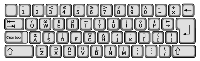

An APL\360 session, compiled to WebAssembly and running in a worker in this tab. There is no server: nothing typed here leaves your browser, and nothing is sent anywhere.

⍴
⎕
⍟
○
*
)LIB 1 lists the workspaces sw-apl ships; )LOAD 1 RACE loads one. )SAVE writes library 0 into this browser's own storage, so a saved workspace comes back next time you open this page in this browser -- and is in no other browser and on no other machine.
)LIB 1
)LOAD 1 RACE
)SAVE
The interpreter stops and waits for a line, which needs a SharedArrayBuffer, which a browser grants only to an isolated page. Served locally by just demo or just pages-serve, that is two headers and it simply works. A static host will not send them, so the published page installs a service worker to add them and loads once more under it -- and a private window refuses that worker, which is the usual reason for the message. Close the tab and open it again, or run it locally.
SharedArrayBuffer
just demo
just pages-serve